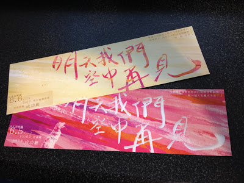

過了大概半年吧，又可以看到面劇團的演出了！:D
面劇團 (Face To Audience, FTA) 是成大學生自己組成的一個劇團，最初是由一群修「表演藝術概論」通識的學生聚在一起所組成的。過去曾經舉行過兩場公演，每場各有兩個場次。地點都在成大的鳳凰樹劇場。
雖然我不是面劇團的團員，也跟裡面的團員一個都不認識，但過去的「四」個演出場次恰好我都參與到了！說來實在是緣份，最初不過是看到學校寄來的信，幫忙宣傳了面劇團的演出，那是第一場的「影痴謀殺」，而他的介紹文案相當的吸引我。雖然到了現在，我已經忘記當時為什麼會被文案吸引，但我還清楚的記得看戲的感動，還有結束後心中幫他們打了一百分滿分的評價！
隔天，我又傻傻的跑去排隊…也不曉得是為了什麼，但就很想再看一次，再好好品嚐他們的演出。對了，說到排隊…因為事前也不曉得要索票還是什麼的，反正我就相當懶惰，所以過去的四場演出，我都是當天提早到達現場排隊，等到開演前五分鐘才能依序入場的。不過，我還記得我運氣相當好，每次都坐到不錯的位置，都在中間靠前面耶！一定是我平常有做好事的關係。噢，然後那天有去找其中兩位演員拍照 :P，正妹小萍跟型男小張，開口的時候我整個超尷尬的XD
隔了半年，面劇團帶來「一躍之下，」作為校慶賀歲(?)演出。呃…因為擔心太過熱門，所以很早 (超級早) 就去排隊了，相當尷尬的排了一個第一名…記得當天不但下雨，而且稍早有另一場活動在那個場地舉辦，所以整個相當狼狽，又找不到地方可以等待。直到面劇團的團員開始佈置，我才終於有地板可以坐XD
「一躍之下，」我相當喜歡，也許除了演出以外，對於劇本也多了一份親切感吧。故事是以成大為出發點，描述男主角阿堂因為辛酸都往肚子裡吞，被教授冷嘲熱諷，還無法如期畢業，種種的壓力下，他選擇了…從電機系的天井向下墜落。看戲當時的我，也是一個延畢中的研究生，也常常假裝堅強，戴著面具面對這個世界。這個故事，相當令人鼻酸。我到現在依然無法忘懷劇中那句台詞：「我以為我可以讓他們後悔，沒想到最後悔的，是我自己。」 (哭)
後來不久，有段小插曲。某天去買水餃之家，當天很多人，我要外帶，當我站在那裡等的時候，發現旁邊有一桌的男女相當眼熟！竟然是….正妹小萍跟型男小張！！！噢，其實我一直都記得他們兩個的名字，但是擔心被當成變態，我就當做不記得了。當時鼓起勇氣去跟他們打招呼，首先偽裝成粉絲問「請問你們是面劇團的團員嗎？」『呃….是…..』「我有看過你們的演出~」天啊太尷尬的開場白了XD 沒想到後來提到我有在部落格寫他們的文章，竟然戳中小張的驚訝點 (我的意思是，讓他相當驚訝)，原來他們不只是曾經回覆過而已，竟然還記得我，真害羞 >////< 啊，對了，他們不是兩個人去吃，還有第三位同學。但是…呃…嗯….哈哈…..我認不得他 orz
其實說實在話，我並沒有一直持續追著面劇團的消息，但是緣份讓我們碰在一起(?)。這次面劇團有公演的消息其實我是在網路索票當天早上才知道的，這次我終於可以不用再很可憐的排隊了啊！！！

雖然說去取票的時候一直很擔心會不會被白眼說「面劇團的票已經有夠難搶了你還索這麼多，是不是要拿票去賣啊？」不過還好沒事啦….XD 好歹我以前都是兩場都去的，這次去兩場過份嗎？XDDD 現在相當期待明後兩天的演出啊~我其實也不知道該用怎樣的心情去面對，畢竟如果對一樣事物抱著相當高的期待，即使這樣事物已經相當棒了，心中的評價依然會減分…但是，我知道面劇團相當優秀啊！而且他們也很努力…真矛盾 orz。無論如何，我相信他們會再一次帶來很棒的演出。 :)
「明天我們空中再見」的演出時間是 6/5, 6/6，晚上 7:00，地點在成大光復校區成功廳，如果你正在閱讀這篇文章，如果你也對面劇團很感興趣，建議你可以來看唷！嗯…我知道你沒有票，但你只要跟我一樣有不屈不撓的精神，當天早點來現場排隊，相信你一定可以成功入場的XD
…….唉，也許未來就沒機會看到面劇團的演出了… :( 等到離開了成大，不要說有沒有收到消息，就算收到了消息，也沒有權限索票了。當完兵後，勢必得去工作，好像也很難排隊…..嗯，總之怎麼想都不可能 (攤手) 就把這兩天的演出，當做是對面劇團留下一個最美好的回憶吧…
Last modified on 2012-06-04